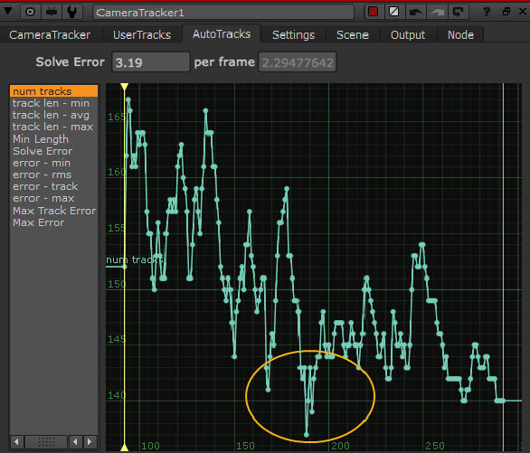
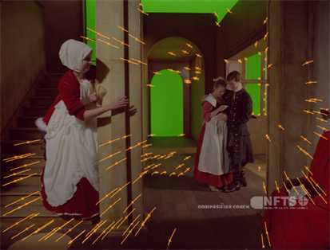
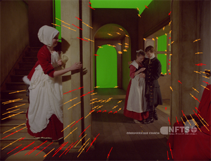
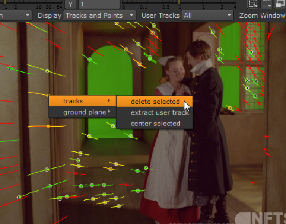

一些序列不可避免地会导致问题。有许多跟踪前检查和跟踪后改进控制来帮助摄影师。
• 在跟踪和屏蔽场景中的任何问题区域之前，先播放该序列。大型运动对象可能会混淆跟踪和求解过程，因为它们可能看起来是场景的固定区域。
请参阅 屏蔽图像的区域 欲了解更多信息。
提示: 如果您正在合成移动元素，如人脸，请尝试使用蒙版跟踪和求解移动元素。然后你会得到一个相机，它在元素周围移动，就像它被固定在一个位置一样。
• 序列的无文本区域，如绿色屏幕，会导致特征在其他区域聚集在一起，影响跟踪和求解。
打开 预览特征 并使用分布和分离控制来平衡功能。请参阅 在序列模式下跟踪
• 场景中的规则边缘 (如条纹图案) 会混淆 CameraTracker。
再次打开 预览特征 并使用 检测阈值 强制 CameraTracker 使用角状图像纹理。请参阅 在序列模式下跟踪
• 您可以通过手动添加用户跟踪来改进跟踪数据，请参见 使用用户跟踪 欲了解更多信息。
您可以使用阈值控制 自动跟踪 Tab 动态拒绝轨道，并删除它们，在解决之前，以提高精度。使用 Num 轨道 曲线为例:
| 1。 | 单击 自动跟踪 选项卡中的属性，并选择 Num 轨道 曲线。 |
提示: 新闻 F 在曲线显示中，将选定的轨迹调整到可用的屏幕空间。

在这个例子中，你可以看到轨道的数量在 180-200 帧周围显著下降。
| 2. | 将查看器播放头移动到受影响的区域，并检查查看器中的跟踪特征。 |
| 3. | 如果你增加 最小长度 在 “属性” 面板中，您将开始看到轨道在低于阈值时变成红色。 |
|
 |
 |
| 最小长度 设置为默认值，3 帧。 | 最小长度设置为 50 帧。 |
| 4. | 单击 删除已拒绝 删除低于指定阈值的所有轨迹。 |
提示: 您还可以手动删除轨迹，方法是在查看器中选择轨迹，单击鼠标右键，然后选择 轨道 > 删除选定的 .
| 5. | 然后，您可以通过单击来重新跟踪受影响的帧范围 更新跟踪 。请参阅 重新跟踪部分帧范围 欲了解更多信息。 |
一旦你完善了跟踪数据，通过擦洗播放头来查看序列，以确保你在固定背景上的图像上有跟踪。如果您看到许多轨迹漂移或跳跃，请手动选择它们，单击鼠标右键，然后转到 轨道 > 删除选定的 .

您还可以在解决之前添加用户跟踪以改进跟踪数据，请参见 使用用户跟踪 .
您可以使用以下控件改进一组功能轨迹，然后重新跟踪以提高获得良好解决方案的机会:
• 最小长度 -设置最小可接受轨道长度的阈值。对于此数量的帧，无法坚持关联特征的轨迹将被拒绝。
在长时间缓慢的相机移动中，最好从拍摄中生成的长轨迹进行求解。如果有很多短轨道，这可能会导致计算相机上的噪音。尝试在解决之前删除短轨道。
• 轨道 阈值 -CameraTracker 沿轨迹变化的容忍度由此控件确定。
降低此阈值使得跟踪对图像变化的容忍度更高，从而可能产生更长的跟踪。
• 轨道 平滑度 -设置平滑轨道生成的阈值。调整此值有助于防止复杂序列中的不良轨迹。
增加 “平滑度” 值将删除随时间发生故障的轨迹。
• 轨道 一致性 -设置阈值，以确定在 CameraTracker 丢弃特征轨迹并在不同位置重新种子之前，特征轨迹的不一致程度。
较高的值允许较少的不一致，反之亦然。
单击 删除已拒绝 删除低于指定阈值的所有轨迹。
|
|